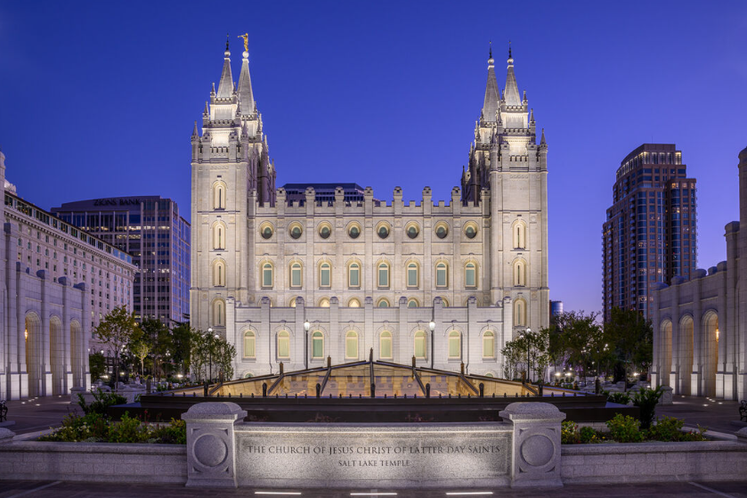

Temple Album
☰
Home
Old
New
Large
Small
Home

Salt Lake Temple
Rome Italy Temple
Nairobi Kenya Temple
Idaho Falls Idaho Temple
Paris France Temple
Manti Utah Temple
Accra Ghana Temple
Tokyo Japan Temple
Laie Hawaii Temple